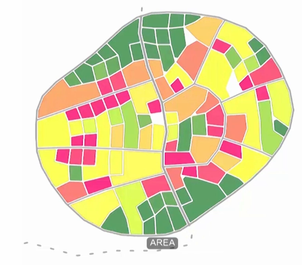

Places have values. Values such as temperature, noise, illumination, density, closeness to water or parks can be calculated or measured rather easily. But property evaluation, comfort or cultural value are more difficult to define, since they differ by subject. By evaluating and giving places a score, a map of these scores can be created.
Local criteria
They represent evaluations present at a specific location such as temperature or terrain slope. See Value At Point.
Relational criteria
They represent evaluations towards other entities such as distance to point of interests See Distance To.
Weighting and combining criteria
By weighting and combining different evaluated criteria through the help of Scoring, a scoring heatmap can be assembled. Preferred places are highlighted, while less interesting places gradually decrease in color.
Scoring maps can be used for various tasks. They can inform land use allocation, show personalised location recommendations or inform street growth patterns, besides others.
Weighting and choosing relevant criteria is a subjective process. Science can provide supporting arguments for specific values, such as statistical comfort of certain temperatures, but it will not satisfy everyone.
The more data available the higher the chance to derive wrong correlations or conclusions.
Environments change. Evaluations might be outdated or imprecise.